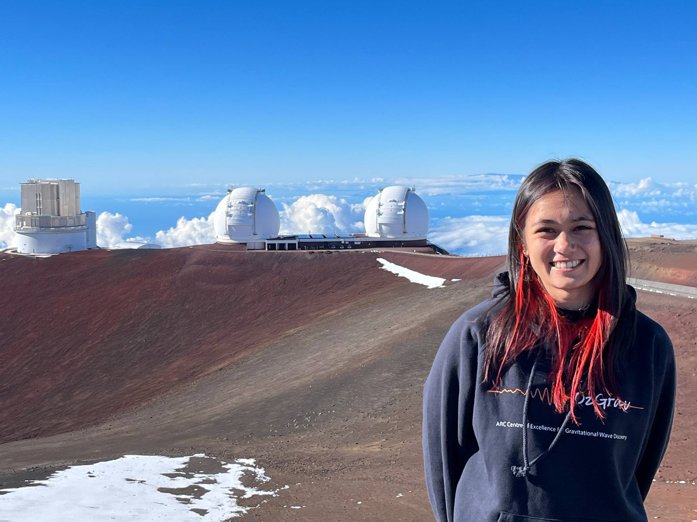
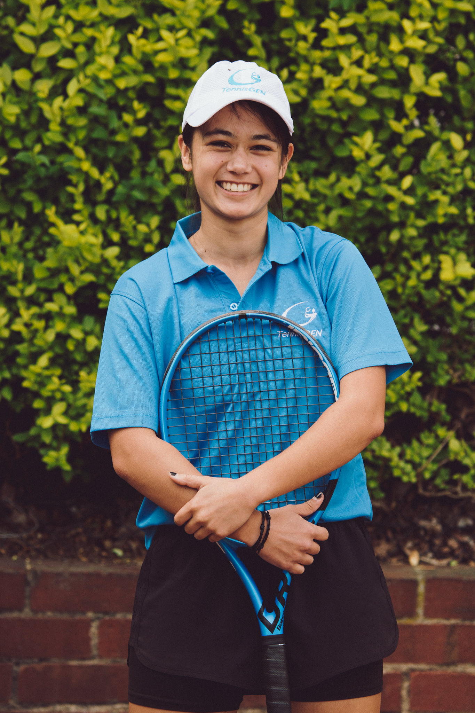

Hello! My name is Natasha Van Bemmel
and I am an PhD candidate at the Centre for Astrophysics and Supercomputing, at Swinburne University of Technology.
I am also an affiliate member of OzGrav the ARC Centre of Excellence for Gravtivational Wave Discovery.
My research mostly entails hunting for the fastest and rarest explosions in the Universe. I search optical data for things
changing over small timescales in the night sky, sometimes even those that are happening in real-time. Examples of transient
events are tidal disuption events, gamma-ray burst afterglows, novae, supernovae, and (what I am most interested in), kilonovae.
I am working with data from the Deeper, Wider, Faster (DWF) programme, and the Kilonovae and Transients Programme (KNTraP) - which
are explained further here!
I completed my Bachelor of Science with a major in physics at Swinburne University of Technology. During this course I untook a research
project in cosmology with Type Ia supernovae, which sparked my passion for astronomy research work. Forging ahead I completed my Honours
year, where I studied dust in the interstellar medium using data from the Dragonfly Telephoto array. Now, I am completing my PhD under
the supervision of Prof. Jeff Cooke, Dr. Anais Möller, and Dr. Jielai Zhang. My thesis explores the optical universe for kilonovae
and other interesting fast transients.
 Prior to life as an astronomer, I spent my days playing tennis. I first began playing at 5 years old and since then had developed to become a competitive tournament player, competing in the Australian National Junior Championships and Victorian State Junior Championships - and even winning the Victorian 16 & Under Grasscourt Championships in singles and doubles. Over my tennis career I won 42 tournament titles, with my full result history documented here. I became a member of Royal South Yarra Lawn Tennis Club , where in 2013 I was awarded the Ethel Le Neveu Trophy best female player of the year (and again in 2016) and the Junior Trophy. At Royal South Yarra, I also began coaching children and assisted in their school holiday programs. Having developed my coaching skills further, I joined TennisGen, where I coached students from 4 years to 80 years old, and designed my own lesson plans.